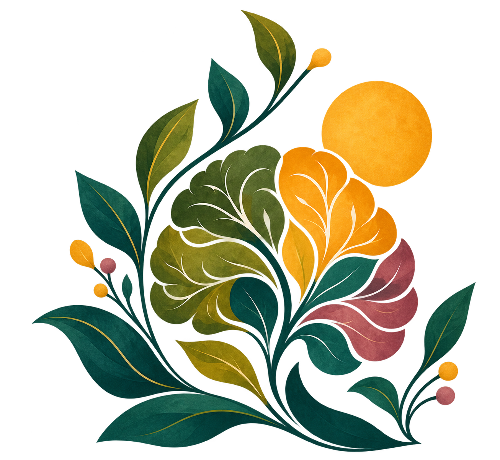
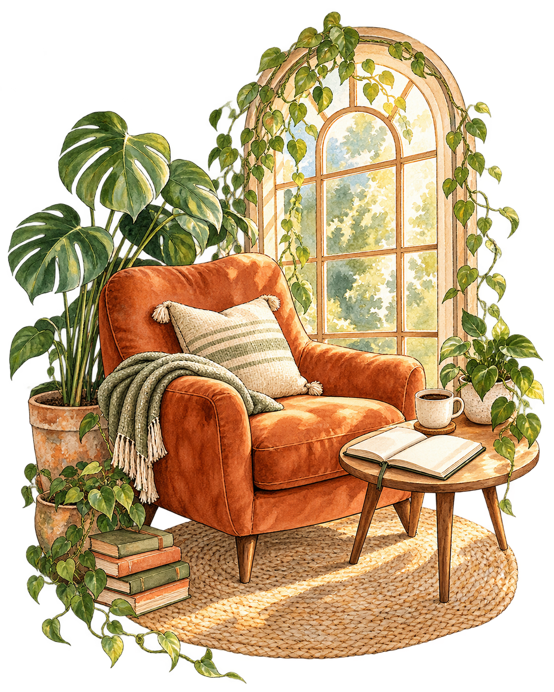
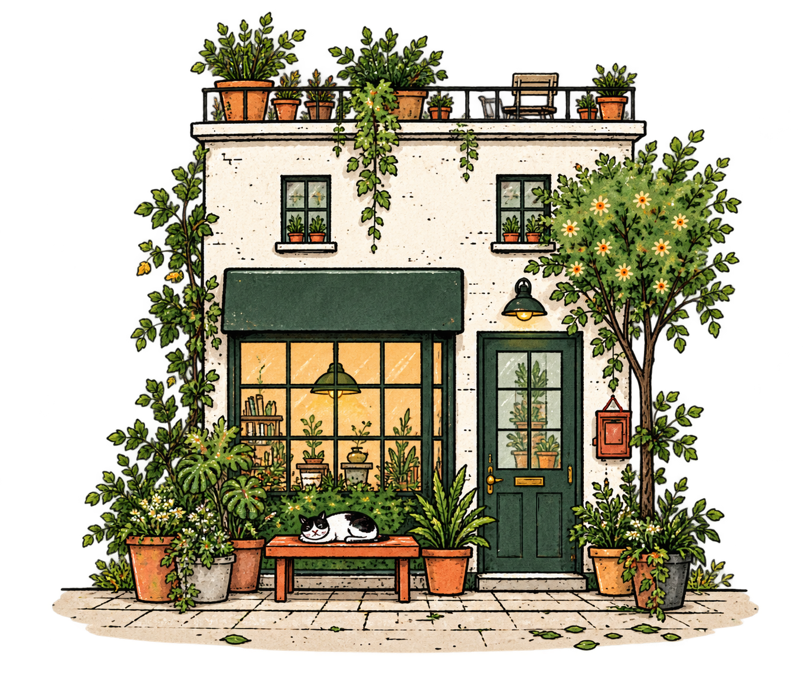
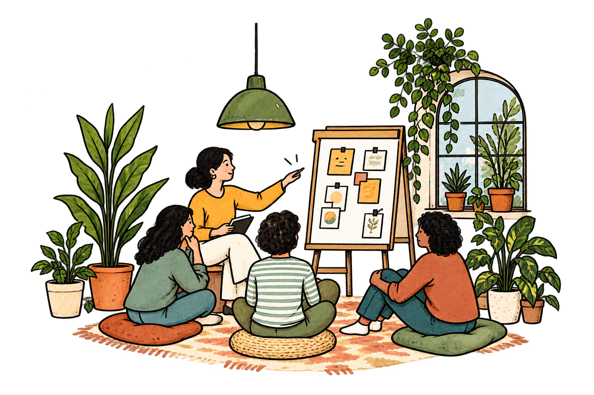
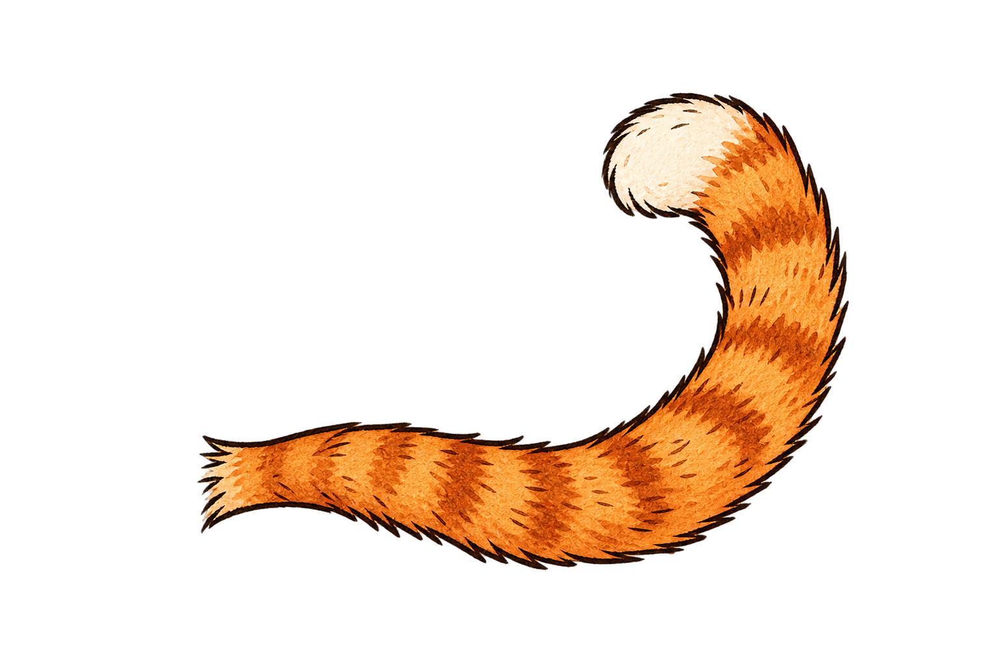
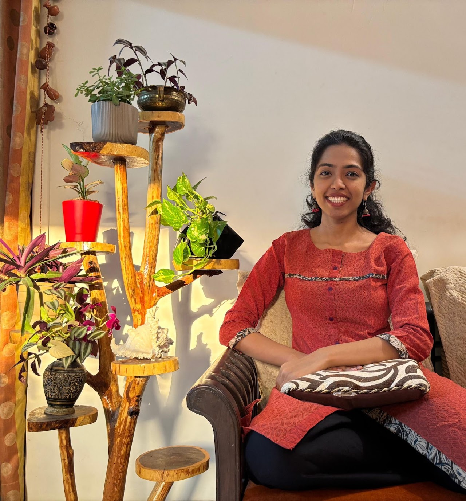

TAKE2 COLLECTIVEPSYCHOLOGY FOR EVERYDAY LIFE
A little space
to take two.
Therapy, shared spaces and thoughtful projects for navigating adult life with more awareness.

The Take Two approachThere is room to
There is room to
look again.
Life changes. We can pause, understand what matters now and move forward with intention.
What Take2 offers
Find your way in.
Four ways to pause, connect and grow.



01
Therapy
A personal space to reflect and find your way forward.

02
Workshops & group spaces
Learn, reflect and connect with others.

03
Projects & collaborations
Psychology meets movement, learning and research.


04
Conversations & resources
Ideas and support to return to when you need them.

About the founder
Hi, I’m Prachiti.
I’m a Counselling Psychologist with a Master’s in Lifespan Counselling from St. Xavier’s College, Mumbai.
Through therapy, workshops and collaborations, I bring psychology into the questions and transitions of everyday life.
Connect with Prachiti →